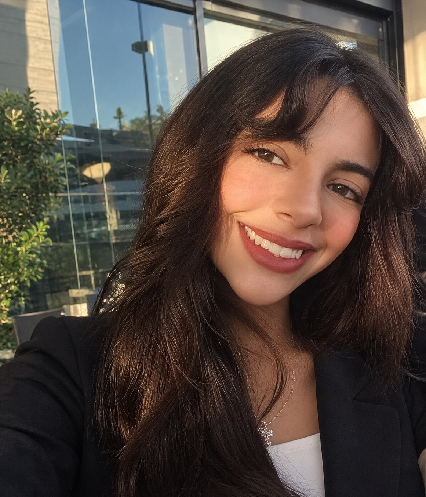

AI researcher and machine learning engineer. I build deep learning, reinforcement learning and LLM systems, from research prototypes to working services.

I hold a BSc in Data Science and Artificial Intelligence from Zewail City of Science and Technology (June 2026). I build AI that acts on real-world systems: multi-agent reinforcement learning and computer vision, tested in simulation before deployment, plus agentic LLM pipelines with retrieval. I design for trust from the start, with explainability, monitoring and behavior testing.
I am applying for Master’s and PhD programs in AI, and I am open to AI/ML engineering and data science roles.
Explore my work in computer vision, reinforcement learning, explainable AI and LLM systems, with architecture diagrams and project details.
For admissions committees, supervisors and hiring teams: I would be glad to talk about how my research and engineering work fits your program or role.